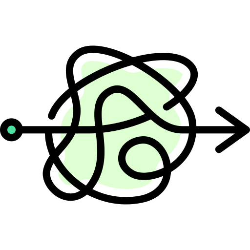

<!DOCTYPE html>

<html>
<head>
<meta charset="utf-8"/>
<meta content="width=device-width, initial-scale=1.0" name="viewport"/>
<meta content="ie=edge" http-equiv="X-UA-Compatible"/>
<title>Fuzz Testing</title>
<style>
    * {
        margin: 0;
        padding: 0;
    }

    #mindmap {
        display: block;
        width: 100vw;
        height: 100vh;
    }
    </style>
<link href="https://cdn.jsdelivr.net/npm/markmap-toolbar@0.15.4/dist/style.css" rel="stylesheet"/>
<link href="https://cdn.jsdelivr.net/npm/katex@0.16.8/dist/katex.min.css" rel="stylesheet"/>
<link href="https://cdn.jsdelivr.net/npm/@highlightjs/cdn-assets@11.8.0/styles/default.min.css" rel="stylesheet"/>
</head>
<body>
<svg id="mindmap"></svg>
<script src="https://cdn.jsdelivr.net/npm/d3@7.8.5/dist/d3.min.js"></script>
<script src="https://cdn.jsdelivr.net/npm/markmap-view@0.15.4/dist/browser/index.js"></script>
<script src="https://cdn.jsdelivr.net/npm/markmap-toolbar@0.15.4/dist/index.js"></script>
<script>(e => { window.WebFontConfig = { custom: { families: ["KaTeX_AMS", "KaTeX_Caligraphic:n4,n7", "KaTeX_Fraktur:n4,n7", "KaTeX_Main:n4,n7,i4,i7", "KaTeX_Math:i4,i7", "KaTeX_Script", "KaTeX_SansSerif:n4,n7,i4", "KaTeX_Size1", "KaTeX_Size2", "KaTeX_Size3", "KaTeX_Size4", "KaTeX_Typewriter"] }, active: () => { e().refreshHook.call() } } })(() => window.markmap)</script>
<script defer="" src="https://cdn.jsdelivr.net/npm/webfontloader@1.6.28/webfontloader.js"></script>
<script>(() => { setTimeout(() => { const { markmap: M, mm: ge } = window, me = new M.Toolbar; me.attach(ge); const fe = me.render(); fe.setAttribute("style", "position:absolute;bottom:20px;right:20px"), document.body.append(fe) }) })()</script>
<script>
        ((F, I, R, H) => {
            const X = F();
            window.mm = X.Markmap.create("svg#mindmap", (I||X.deriveOptions)(H), R)
        })(()=>window.markmap, null, {'content': "<div style='display: flex; justify-content: center; align-items: center;'></div> <div style='padding-bottom: 20px; text-align: center;'><font color='green'><h3>Fuzz Testing</h3></font></div>", 'depth': 1, 'children': [{'content': '<h4>Overview</h4>', 'depth': 2, 'children': [{'content': '<h4>Software Analysis</h4>', 'depth': 3, 'children': [{'content': '静态分析：不运行程序', 'depth': 4, 'children': [{'content': '符号执行：对程序的符号表示进行操作,模拟程序的执行路径', 'depth': 5}]}, {'content': '动态分析：执行程序', 'depth': 4, 'children': [{'content': '调试器：在源代码级别进行分析,设置断点、单步执行、检查变量值等', 'depth': 5}, {'content': '模糊测试：注入恶意或异常输入', 'depth': 5}]}]}, {'content': '一种基于缺陷注入的软件安全测试技术', 'depth': 3}, {'content': '通过监视非预期输入可能产生的异常结果来发现软件问题', 'depth': 3}, {'content': '主要属于黑盒测试和灰盒测试领域', 'depth': 3}]}, {'content': "<div style='display: flex; justify-content: center; align-items: center;'> <code>contrast</code></div> <h4>Advantages</h4>", 'depth': 2, 'children': [{'content': '白盒测试：基于源代码', 'depth': 3, 'children': [{'content': '模糊测试的测试目标是<b>二进制可执行代码</b>', 'depth': 4}]}, {'content': '静态分析技术：存在大量误报问题（False Positive）,精度不高', 'depth': 3, 'children': [{'content': '模糊测试是<b>动态执行</b>的', 'depth': 4}]}, {'content': '符号执行技术：穷举所有可能的执行路径,比如 if,存在路径状态爆炸的问题', 'depth': 3, 'children': [{'content': '模糊测试原理简单,没有大量的理论推导和公式计算', 'depth': 4}]}, {'content': '逆向工程：需要大量的人工参与', 'depth': 3, 'children': [{'content': '模糊测试自动化程度高', 'depth': 4}]}]}, {'content': '<h4>Limitations</h4>', 'depth': 2, 'children': [{'content': '<b>访问控制漏洞</b>的发现能力有限', 'depth': 3, 'children': [{'content': '模糊测试挖掘出的漏洞大多是传统的溢出类漏洞,由于该技术的逻辑感知能力有限,<br>对于违反权限控制的安全漏洞,如后门、绕过认证等漏洞的发现能力有限', 'depth': 4}]}, {'content': '<b>设计逻辑缺陷</b>的发现能力有限', 'depth': 3, 'children': [{'content': '糟糕的逻辑往往并不会导致程序崩溃,<br>而模糊测试发现漏洞的一个最重要依据就是监测目标程序的崩溃', 'depth': 4}]}, {'content': '<b>多阶段安全漏洞</b>的发现能力有限', 'depth': 3, 'children': [{'content': '模糊测试对识别单独的漏洞很有用,<br>但对那些小的漏洞序列构成的高危漏洞的发现能力有限', 'depth': 4}]}, {'content': '<b>多点触发漏洞</b>的发现能力有限', 'depth': 3}, {'content': '<b>不能保证畸形输入数据能够覆盖到所有的分支代码</b>', 'depth': 3}]}, {'content': '<h4>Research Trends</h4>', 'depth': 2, 'children': [{'content': '提高代码覆盖率,以提高模糊测试效果', 'depth': 3}, {'content': '针对数量巨大的测试用例,引进并行和分布式技术,以有效减少测试时间', 'depth': 3}, {'content': '构建通过率更高的测试用例,以避免采用大量纯随机数据来进行模糊测试', 'depth': 3}, {'content': '<b>基于知识库构造测试用例,以提高测试数据的针对性</b>', 'depth': 3}]}, {'content': '<h4>Steps</h4>', 'depth': 2, 'children': [{'content': '<b>1.确定测试目标</b>', 'depth': 3}, {'content': '<b>2.确定预期输入</b>', 'depth': 3}, {'content': '<b>3.生成模糊测试用例</b>', 'depth': 3, 'children': [{'content': '基于<b>变异</b>的方法', 'depth': 4, 'children': [{'content': 'bitflip, 按位翻转, 1 变成 0, 0 变成 1', 'depth': 5}, {'content': 'arithmetic, 整数加/减法算数运算', 'depth': 5}, {'content': "interest, 把一些特殊内容替换到原文件中 if(x='string')", 'depth': 5}, {'content': 'dictionary, 把自动生成或用户提供的 token 替换/插入到原文件中', 'depth': 5}, {'content': 'havoc, 大破坏, 前几种变换的组合', 'depth': 5}, {'content': 'splice, 铰接, 将两个文件拼接', 'depth': 5}, {'content': '开源工具 <br> AFL (American Fuzzy Lop) <br> AFLgo(AFL 的改进, 主要测试 go 语言编写的程序)', 'depth': 5}]}, {'content': '基于<b>生成</b>的方法', 'depth': 4}]}, {'content': '<b>4.执行模糊测试用例</b>', 'depth': 3}, {'content': '<b>5.监视异常</b>', 'depth': 3, 'children': [{'content': '基于<b>调试</b>的方法', 'depth': 4}, {'content': '基于<b>插桩</b>的方法', 'depth': 4, 'children': [{'content': '<b>源代码插桩(Source Code Instrumentation)</b><br>要求掌握软件应用程序的源代码(或逆向工程), 否则无法进行插桩, 尤其适用于面向切面编程技术(Aspect Oriented Programming)', 'depth': 5}, {'content': '<b>二进制插桩(Binary Instrumentation)</b>', 'depth': 5, 'children': [{'content': '<b>静态二进制插桩(Static Binary Rewriting)</b>(可能涉及逆向工程)<br>在编译时对二进制文件进行修改，将附加代码嵌入到生成的二进制文件中<br>工具有 BCEL, Javassit, ASM 等', 'depth': 6}, {'content': '<b>动态二进制插桩(Dynamic Binary Translation)</b>(不涉及逆向工程, 运行时)<br>在程序<b>运行时</b>进行的, 通过在内存中注入附加代码来实现, 其系统消耗较大<br>常用的有 DynamoRIO, Dyninst ,Pin 等', 'depth': 6}, {'content': "<a href='https://marsvillager.github.io/mindmap/out/Injection.html'>代码注入</a>", 'depth': 6}]}]}]}, {'content': '<b>6.异常分析并确认漏洞</b>', 'depth': 3, 'children': [{'content': '常借助 IDA Pro, OIIDbg 和 SoftICE 等二进制分析工具进行人工分析', 'depth': 4}]}]}, {'content': '<h4>Application</h4>', 'depth': 2, 'children': [{'content': '文字处理软件', 'depth': 4, 'children': [{'content': 'FileFuzz', 'depth': 5}, {'content': 'SPIKEfile', 'depth': 5}, {'content': 'notSPIKEfile', 'depth': 5}, {'content': 'PaiMei', 'depth': 5}]}, {'content': '网络协议', 'depth': 4, 'children': [{'content': 'Sulley', 'depth': 5}, {'content': 'SPIKE', 'depth': 5}, {'content': 'Peach Fuzzer', 'depth': 5}]}, {'content': 'Web 应用程序', 'depth': 4, 'children': [{'content': 'Powerfuzzer', 'depth': 5}, {'content': 'SPIKE Proxy', 'depth': 5}, {'content': 'Web Scarab', 'depth': 5}, {'content': 'Web Inspect', 'depth': 5}]}, {'content': 'Web 浏览器', 'depth': 4, 'children': [{'content': 'COMRaider: ActiveX 控件', 'depth': 5}, {'content': 'Mangleme: HTML', 'depth': 5}, {'content': 'Hamachi: 动态 HTML(DHTML)', 'depth': 5}, {'content': 'CSSDIE: CSS 文件', 'depth': 5}]}, {'content': '其它', 'depth': 4, 'children': [{'content': 'American Fuzzy Lop', 'depth': 5}]}]}]},
            {"colorFreezeLevel": 2, "initialExpandLevel": 3}
        )
    </script>
</body>
</html>